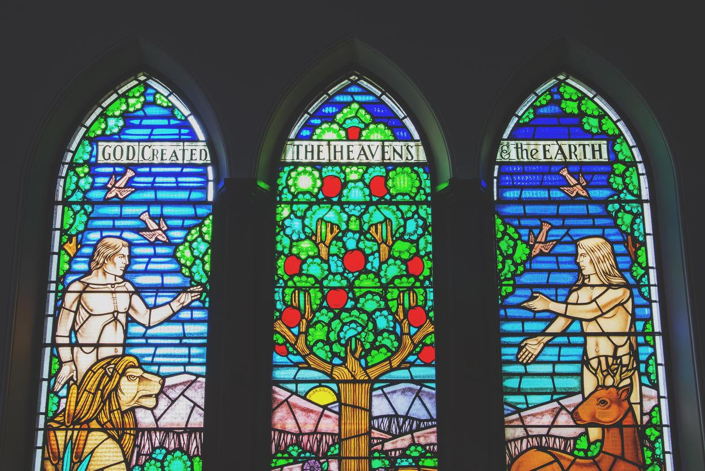

tags: critical thinking, integral, religion
5 min read

Human records indicate that some sort of belief in a God or collection of gods is a feature of almost all human culture. No matter what the continent or age, a belief in powerful, supernatural beings that somehow influence human existence is a near-constant.
At the same time, though, many skeptics have persistently questioned the existence of such a being, and beliefs about the attributes of God have exhibited wide variation, with such variations often being so deeply held that wars have been fought to advance one sort of belief over another.
Rather than approach the question of God's existence directly, it seems wiser to ask ourselves how we can best explain the facts above – the combination of a nearly universal human belief in God, combined with so far irreconcilable differences in what sort of God we believe in.
There seem to be, most fundamentally, only two possibilities.
1. Human Belief in God as a Reflection of External Reality
By this I mean that God exists in some observable way, and that we can postulate some sort of entity whose attributes could account for the bulk of these observations.
Here we immediately run into multiple problems. The first problem is that human beliefs about the nature of God do not seem to be converging in the way that other beliefs about external reality do. If something really exists in an observable way, then over time human beliefs eventually yield to a conception of the source of these observations that is consistent and stable. However, in consideration of human beliefs about God, we simply see no such consistency, convergence or stability. Christians, Buddhists and Muslims are not flocking in droves to some universal set of stories and beliefs that represents the “true” God: instead, all of these different versions of external reality remain separate, based on beliefs that are all equally unsupported by consistent observations of the material world.
The second problem we encounter with this conception of God is that the steady progress of science as a means of understanding the world around us has in no way confirmed any of the various human beliefs about God. The most startling of these scientific discoveries is the slow evolution of increasingly complex forms of life through the workings of natural selection. If a belief in God were based on external reality then we would expect scientific discoveries such as these to advance some beliefs while disproving others: however, the principles of evolution seem to discredit all forms of religious belief. When we consider the varieties of human religious belief, we simply find no existing religious belief systems that included anything like evolution.
2. Human Belief in God as a Reflection of Internal Reality
This is the second possibility: that human beliefs in God reflect some internal reality about human nature.
If this were true, then we might expect that religious beliefs are a form of story-telling in which the figure of God is a powerful, recurring symbol of some sort. We might also fairly expect that the details of these various stories might differ significantly, since they are only stories, and since the details of such stories are offered as symbols themselves, and to make the stories more powerful and effective. Yet we would not expect the exact details to be the same, if the stories were created independently, since many different details might be used to symbolize a common internal reality.
Of course, the varieties of human religious belief exactly fit these sorts of expectations. All religious texts are based on an interrelated web of stories, and while many elements of these stories are consistent in a general fashion, they differ greatly in the details. Also, some of the general outlines of such stories seem to evolve over time, and in fact seem to evolve in a way consistent with the development of human culture. And so, if we accept that human beliefs in god mirror some internal element of our human nature, that an innate and powerful element of our nature is our culture, and that our cultures evolve over time, then we seem to have a set of beliefs that are remarkably stable and consistent, that seem to hang together and reinforce each other, that “make sense.”
In other words, God is best understood to be a symbol that humans have created.
To see God in such a way is not the same as saying that God doesn't exist.
As Ken Wilber puts it, when describing the four quadrants of reality:
But the main point is that this Left Hand dimension refers to the inside, to the interior depth that is consciousness itself.
Q: You said earlier that depth is consciousness, or what depth looked like from within.
KW: Yes, exactly. The Left Hand is what the holon looks like from within; the Right Hand is what the same holon looks like from without. Interior and exterior. Consciousness and form. Subjective and objective.
And this left hand dimension, this interior perspective, this view from the depths of consciousness, is no less valid, no less real, than the exterior, material view.
As G. K. Chesterton so elegantly stated it:
The center of every man's existence is a dream. Death, disease, insanity, are merely material accidents, like a toothache or a twisted ankle. That these brutal forces always besiege and often capture the citadel does not prove that they are the citadel.